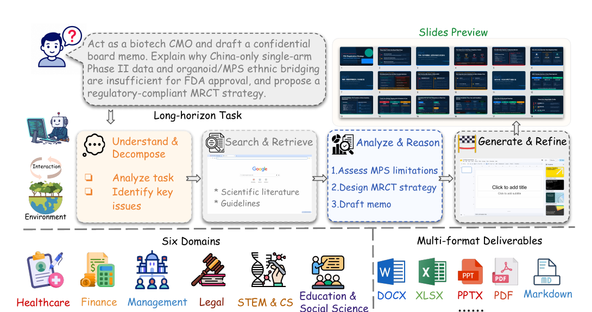
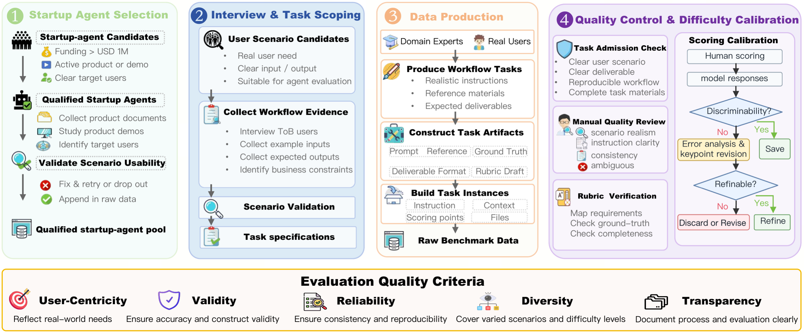
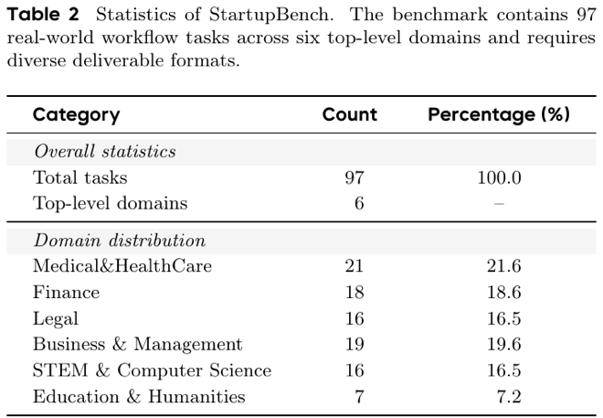

Market-validated agent workflows
StartupBench
Benchmarking General-Purpose Agents on Market-Validated Workflows
StartupBench evaluates whether frontier agents can complete realistic workflows that users already delegate to AI-native startup products. Tasks span professional domains, require long-horizon execution, and are judged through multi-format deliverables rather than isolated short answers.

Why it matters
From isolated tests to delegated work.
Market source
Tasks are derived from startup-agent products, product demos, and interviews around workflows users actually want to delegate.
End-to-end scope
Each task asks agents to search, reason, compose, verify, and deliver artifacts under realistic workspace constraints.
Artifact-first scoring
Evaluation inspects files and evidence views with weighted rubrics, capturing whether a deliverable is production-ready.
Data construction
A startup-to-benchmark pipeline.
StartupBench starts with market-vetted agents, collects scenario evidence, builds workflow artifacts, and calibrates task difficulty through quality control.

Startup agent selection
Filter funded products with active demos, clear users, and deployable workflow scenarios.
Interview and task scoping
Collect target users, business constraints, expected outputs, and reference materials.
Data production
Build prompts, workspaces, ground truth deliverables, rubrics, and noisy real-world files.
Quality calibration
Review clarity, realism, ambiguity, rubric validity, and discriminative difficulty.
Benchmark anatomy
Six domains, many deliverable formats.
The benchmark stresses professional conventions across medical and healthcare, finance, legal, management, STEM, and education workflows, with outputs ranging from spreadsheets to slide decks and reports.
Medical & HealthCare21
Finance18
Business & Management19
Legal16
STEM & Computer Science16
Education & Humanities7

DOCX
XLSX
PPTX
PDF
Markdown
Images
Text artifacts
Results
High average scores still leave production gaps.
The best average score reaches 73.67, while the top pass@1 is 31.27 under the strict score >= 90 criterion. Even leading agents still leave many realistic workflow deliverables short of production-ready completion.
| Rank | Model | Average | Pass@1 | Gap |
|---|
Top average score from Kimi-k3.
Top pass@1 from GPT-5.6-sol, still below one third of tasks.
Human agreement for the Agent-as-Judge framework.
Example cases
Open a workflow and inspect each agent run.
Each example surfaces the original task, model execution trace, score, produced result, and failure points behind the aggregate leaderboard. Missing case-level model blocks from the Feishu sheet are marked as N/A.
Task
Expected Result
Error Points
Execution Process
Trajectory Replay
- Evidence
- State
| Model | Process | Score | Result | Error Point |
|---|
Failure modes
Where agents break in realistic work.
Complex instruction following
Agents partially satisfy dense task specifications, leaving requested files, sections, or constraints incomplete.
Domain-specific expertise
Professional norms in finance, legal, medical, and business workflows expose gaps that generic fluency cannot cover.
Long-horizon execution
Multi-step workflows require planning, retrieval, artifact assembly, and consistency over extended contexts.
Deliverable quality
Outputs can look plausible while missing formulas, cached spreadsheet values, citations, slide polish, or file structure.
Self-verification hallucination
Agents may claim that requirements are satisfied even when generated artifacts fail rubric-level inspection.
Format compliance
Real workflows demand exact suffixes and multi-file outputs; missing or malformed artifacts count as operational failures.
Evaluation
Agent-as-Judge over original artifacts.
Each submission is transformed into evidence views and scored against fine-grained weighted criteria. This keeps evaluation aligned with deliverable correctness instead of surface-level answer similarity.
rubrics per task
pass threshold
average framework variation
Citation
StartupBench paper.
@misc{startupbench2026,
title = {StartupBench: Benchmarking General-Purpose Agents on Market-Validated Workflows},
year = {2026},
note = {Project page for StartupBench}
}